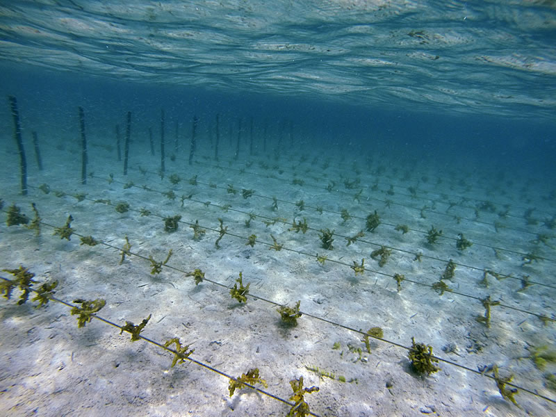

Pierre Erwes is a serial entrepreneur, engineer and blue catalyst. He is the founder of BioMarine, an organisation at the crossroads of research, business and investment in the marine biotechnology space.
Through consulting, investing, running events and creating projects, BioMarine is paving the way to a sustainable future.
In this edited conversation with Peter Green, Pierre spoke about his entrepreneurial journey, his vision for the seaweed industry and how seaweed can contribute towards a global bioeconomy.

What's your background as an entrepreneur and how did BioMarine evolve to where it is now?
I studied as a marine oceanographer and an engineer in IT and robotics. After this I was involved in pharmaceutical marketing, was the CEO of a large software group and have been an entrepreneur for most of my life.
I used to live and work in Canada where I was involved in the environmental, defence, IT, and biotechnology sectors. After this stint I returned to France at the scientific Foundation of Lyon under the chairmanship of Philippe de Marescaux and Raymond Barre, former French Prime Minister. He asked me to help reconcile the relationship between society and bio-technology in order to prepare for the future challenges ahead! We did some great work together.
Towards the end of our collaboration, in 2007, he asked me to use my background as an oceanographer to make use of the oceans and explain to the public the importance of marine resources. This is because the oceans remain the largest reservoir of potentially usable technology on the planet. So, 15 years ago I decided to launch BioMarine as a major trans-sector event under the French presidency of the European Council. At the event we had talks on everything from space to biotechnology, food, cosmetics and much more. It was a big event and we were fortunate to be joined by the likes of Jean Michel Cousteau, Tony Haymet and Sandra Bessudo, experts in their respective fields.
However, after that event it became clear that we needed to refocus. The public didn't care about the ocean yet. The blue agenda was definitely not a priority for politics as well! We needed to set up the stage, build the investor base and attract people to the industry first.
So, we confronted this challenge by building up BioMarine into the largest marine biotech network in the world. We now regularly host events where we try to educate politicians and leaders on the need to prepare themselves for climate change. We host events like the BioMarine Business Convention and Seaweed Around the Clock.

How did COVID affect the BioMarine events in 2020?
We normally run BioMarine conferences in-person. For these events we typically bring 250 CEO's together who speak, interact, buy, sell and strike-up agreements. In one BioMarine event we might generate somewhere between €50 million to €500 million in deals in two days. Pre-COVID it was very efficient.
During COVID we decided to switch to a fully digital model which was a challenge. Nevertheless, software like Zoom and Meeting Mojo made the transition easier and even brought added value in some respects. For example, by using Meeting Mojo for Seaweed Around the Clock, we organized very interactive debates on key topics mixing discussion, presentation and videos.

What's the mission at BioMarine?
Through all these events we want people to understand that climate change is not a fatality. We have the keys to solve this issue in a short period of time if we act in a coordinated way. Seaweed is one key candidate to help reduce CO2 and protect the environment. There is potentially 66 million hectares of available water where it can be planted. If we start to massively cultivate seaweed, and plant just 10 million hectares, we're going to achieve our objective of halving global C02 emissions. Alexandra Cousteau , Carlos Duarte and their team (Oceans2050)are currently working on calculating the exact formula for evaluating the carbon storage in the coming months. Nevertheless, what we've already seen is the highly versatile and important role seaweed can play, not only in climate-change mitigation but also in preserving coastal environments, restoring biodiversity, helping local fisheries, and integrating local and indigenous people.

Second to our events, to further address climate change, the BioMarine organization has also been focusing on three main projects ourselves. The first project relates to seaweed and improving the entire value chain. Alliga is the spin-off that has come from brainstorming and incubating ideas in this area. We've also been involved in bioplastic and cellular mariculture projects.
Could you expand a bit on how you envision and intend to improve the seaweed supply and value-chains?
In general, we need to coordinate things better because shipping fresh seaweed around the world is not an option. We need hubs for algae production and processing which can service local markets and provide for local communities. For example, we are presently working on a project in Western Australia where we are committed to supporting and collaborating with local Aboriginal communities through seaweed farming.
It doesn't stop with seaweed farming. We are trying to give back what these people once had in abundance by also helping them work their way into higher value products in the value-chain.
We don't want our friends in Kimberley, Australia to just sell cheap, raw material which can fetch €2/€3 per kilo. I want to support them in building the processing plants that will help them sell the high-value products like anti-viral components for pharmaceutical companies. These products can reach €500 per kilo. We are on a crusade to give back to local communities what they deserve.
It's important to mention that we are also seeking their help and knowledge in protecting coastal environments. These indigenous populations have known how to farm and act in synergy with the ocean for thousands of years. We can learn a lot from them.
In your opinion, what does the future of the seaweed industry look like?
The potential for seaweed products is huge. They can replace toxic chemicals in the textile industry, support the space industry, and improve the quality of our food. The beauty with seaweed is that there is no waste. If you consider the byproducts in seaweed it is incredible.
Firstly, you have the juices, full of biomolecules, then there is the sugar which can be used to produce bioplastics, or H2. After that, you have the phenols that can go straight to cosmetics and pharmaceutical industries. You also have oil which could be used for energy or pharmaceutical products. Finally, you have Fucoidans which are very valuable compounds and Alginates that can be used for many things including textiles. So, wherever you look in the seaweed value-chain, it's a pure circular bioeconomy.
Is there a specific area where seaweed use is growing quite rapidly?
Seaweed is used in all major industry and agricultural segments. For example, using seaweed in agriculture is highly important. We've been using seaweed to fertilise the fields in Canada for centuries. The extracts from seaweed can act as perfect bio-stimulants and even help to reduce methane emissions in ruminant cattle.
Meanwhile, I think it would be more important to use seaweed to feed people instead of feeding methane-producing cattle. If people start to think about the value that seaweed provides in terms of protein, it's stunning. Not only that, but seaweed is also a great antioxidant, it's antiviral, it helps clean your gut, and it helps you balance all the organic components that you need in your body. The Japanese and the Chinese have been eating seaweed for thousands of years.
Seaweed for bioplastic is another area which is growing very fast. Over the last five years, I've been checking in with 17 different companies in this space and we've chosen a young UK based startup. They have not only a really good technology, but they also had a vision and most importantly they asked us to secure the supply chain, working with another cool company : the Selt Marine group. There is definitively a huge potential here.